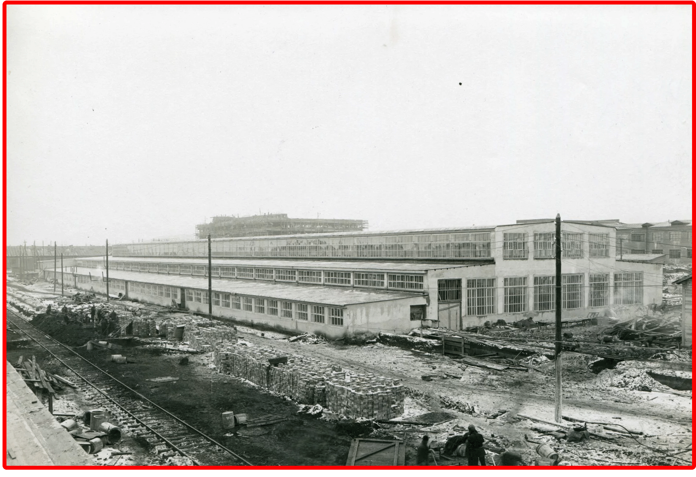
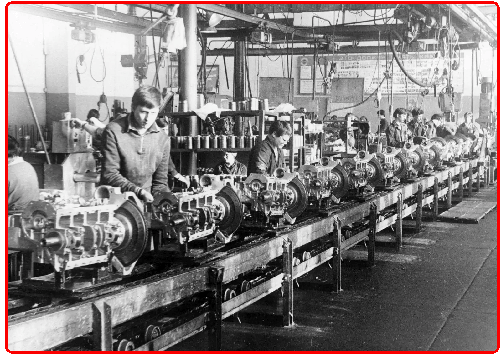
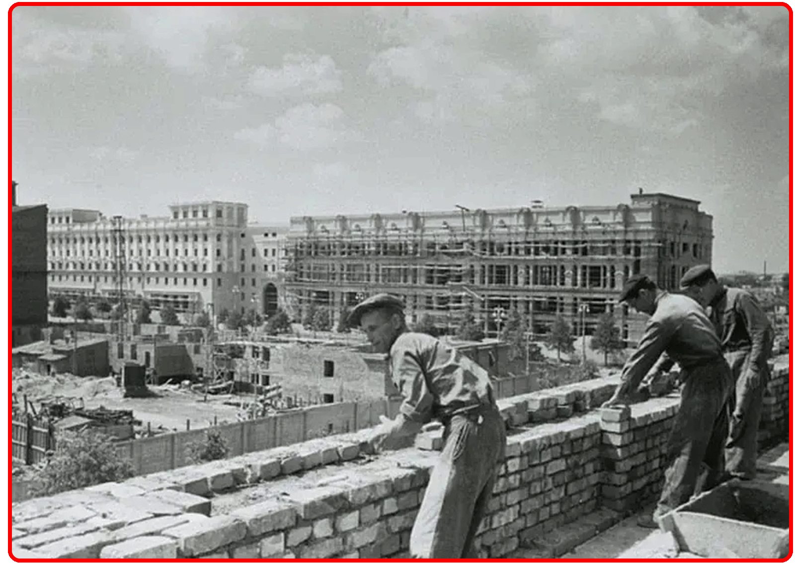

ВОССТАНОВЛЕНИЕ ПРОМЫШЛЕННОСТИ
Всего за годы 4-й пятилетки было восстановлено из руин и введено в строй более 6200 промышленных предприятий на всей территории страны, в том числе знаменитый Днепрогэс, десятки угольных шахт и предприятий Донбасса, Запорожский и Азовский сталелитейные заводы, Макеевский труболитейный завод, Днепродзержинский азотно-туковый комбинат, Минский, Ульяновский и Рязанский станкостроительные заводы, Рижский электромашиностроительный завод, Закавказский металлургический завод, Калужский турбинный комбинат, Усть-Каменогорский свинцово-цинковый комбинат, Коломенский завод тяжёлого станкостроения, Кутаисский автомобильный завод, Бакинский, Куйбышевский и Омский нефтеперерабатывающие заводы, газопровод Саратов — Москва и многие другие промышленные гиганты страны.

ДАЛЬНЕЙШЕЕ РАЗВИТИЕ ПРОМЫШЛЕННОСТИ
За время 4-й пятилетки был не только восстановлен довоенный уровень промышленного производства, но также значительно изменена структура всей экономики и происходил довольно бурный технологический прогресс как в самой промышленности, так и в других отраслях народного хозяйства страны. Наиболее важным для быстрого технического прогресса в первой послевоенной пятилетке было развитие производства металлорежущего оборудования — важнейшей основы прогресса всего машиностроительного комплекса страны. Если до войны, добившись больших успехов по количеству выпускаемых станков, СССР практически не имел производства сложного современного металлорежущего оборудования и был вынужден его импортировать из-за рубежа, то уже в 4-й пятилетке произошёл подлинный прорыв в этой важной сфере промышленного производства. По сравнению с довоенным уровнем общее производство металлорежущих станков по количественному показателю выросло на 60%, а по суммарной мощности — на 136%, что зримо говорило об огромном процессе всего советского станкостроения. Более того, за прошедшее десятилетие (1940–1950) производство наиболее сложных прецизионных станков выросло с 17 до 2744 штук, крупных тяжёлых станков — соответственно с 42 до 1537 штук, а агрегатных станков — с 25 до 400 штук. Наконец, впервые в массовом масштабе начали выпускаться автоматические линии и были введён в строй первый в стране Ульяновский моторный завод-автомат. Одним словом, в этой важнейшей отрасли произошла подлинная техническая революция, в результате которой она вышла на технический уровень самых передовых капиталистических держав спустя всего лишь пять лет после окончания тяжелейшей войны.Впечатляющие технические достижения были достигнуты также в электроэнергетике, чёрной и цветной металлургии, в военном и гражданском машиностроении и в химической промышленности. Не будет преувеличением сказать, что именно в годы 4-й пятилетки, в самостоятельную и довольно развитую отрасль советской индустрии превратилась радиоэлектронная промышленность. Именно тогда в структуре нескольких союзных ведомств, в том числе в Министерстве промышленности средств связи и Министерстве электропромышленности, были созданы десятки научно-исследовательских институтов и построены десятки промышленных предприятий. И если до войны в радиотехнической промышленности имелось всего лишь 13 заводов, на которых работали чуть больше 21 тыс. человек, то уже в 1950 г. функционировало 98 заводов, где трудились 250 тыс. человек. Более того, именно тогда в рамках этой отрасли началась и разработка первых советских электронно-вычислительных машин.

ВОССТАНОВЛЕНИЕ И РАЗВИТИЕ ПРОМЫШЛЕННОСТИ
Со второго полугодия 1944 года в БССР стали работать 72 электростанции. К маю 1945 года в республике функционировало 12 тыс. промышленных объектов, из них 8 тыс. фабрик и заводов, 4 тыс. артелей и мастерских. К февралю 1946 года было восстановлено более 10 тыс. км железных дорог, 1735 мостов. В первую послевоенную пятилетку главной задачей стало достижение довоенного уровня экономики и дальнейшее ее развитие. Интенсивно росли производственные объемы тяжелой индустрии, энергетики, зачастую в ущерб легкой и пищевой промышленности. К концу 1950 года промышленность БССР по объему валовой продукции превысила довоенной уровень на 15%, а в западных областях Беларуси - почти в 2 раза. Ведущей отраслью становилось машиностроение: в 1950 году автозавод дал народному хозяйству около 2,4 тыс. автомобилей, велосипедный завод выпустил 70 тыс. велосипедов, тракторный - первые 36 машин.